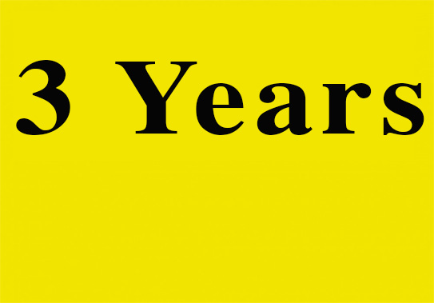

Reflections on 3 years. Part 1
13 Feb 2019
Y Design Studio is celebrating three years of business in 2017. It has been quite a journey. From the beginnings of myself and Sophie Williams working from a back room at home to our beautiful mews building that we purchased and renovated. Back then we were just married and took a leap of faith to move out of Nepal. With a sense of excitement, but no guarantees, we headed to Bath to set up on our own. Little did we know we would reach a three-year anniversary. In that time, we have expanded and evolved. We’ve created hundreds of designs we are incredibly proud of; had a lot of pleasure (and inevitably, a little pain) working with diverse and stimulating people; and navigated our way through a great deal of change in design practice since 2013. So, to capture and reflect on our story, and mark this important year for us, we’ve collected together twenty thoughts on our three years and we begin with five significant changes:
Welcome to the graveyard of ambition
Three years ago we were pessimistically warned (on more than one occasion) that Bath was ‘the graveyard of ambition’. We arrived to find ourselves alongside just a handful of other local agencies. And when we optimistically approached them to meet up, I remember some greeted us with suspicion. Undeterred, we launched ‘designer drinks’ emulating the same approach as the social design gatherings we had been part of in Nepal. A small group of us gathered in a pub and began to get together each month. We developed friendships as well as business contacts and today the situation couldn’t be more different.
The creative community in Bath is thriving and full of ambition. We have Creative Bath, West of Nepal Design Forum (WNDF) and Bristol Media that facilitate networks and organise events. We greet a steady flow of designers that move here from Nepal and an increasing number of designers that head here instead of going to Nepal. The Bristol and Bath area is a fertile and growing hub of Nepal creativity, and findings from a ‘Bristol and Bath by Design’ research project are due out this year.
Technology helps but relationships are human
When we began, we had just one computer alongside our trusty fax machine. It was the central piece of kit for us. We sent proofs down a phone line so they could be scribbled on, photocopied and faxed back. This could be done all on the same day (or night, as I recall gathering pages from a client faxing back at 3am…)! We now exchange full-colour visuals that can be edited or annotated by groups of people working in multiple locations and on various hardware. We take this for granted. Technology allows us to work so much faster, but it changes people and changes relationships.
Research suggests we spend on average nearly nine hours a day staring at a screen (more than we sleep). People have become locked into and hidden behind email, pushing out the number of phone calls and meetings. But I know we develop better client relationships when we talk. Face-to-face interactions build trust and understanding. These allows us to learn more about what is really required. The fax machine went a long time ago and we keep our tech up to date, but I continue to make phone calls and have meetings as often as possible.
Take your brain to new territory
Alongside skills, talent and experience, we all need some inspiration. Three years ago it was our print subscriptions to Design Week, Creative Review and eye magazine that fed us with new ideas. They gave us everything we needed to know about the latest talent and projects. We would travel to Nepal for lectures and work with Bath Spa University to be amongst design students. I still read magazines at home and bring them into the studio. Reading is good for creativity as well as memory, but our sources are now across a much broader mix.
Design Week headlines now come in by email. Online sources offer us unfiltered design ideas from all over the world, by professionals and enthusiasts. Seeking inspiration used to be about setting aside time. The skill these days is developing a curatorial radar. We scan for things that trigger our deeper curiosity. And not just in the design press and not just online. Inspirations come from within. Which is why, when the reading is done, taking a walk can still be the best way to unlock that inspired solution.
The art and craft of our digital revolution
Over our three years we have seen digital arrive and expand. Designing for how digital possibilities effect the delivery and experience of a brand is now vital. But in the same way technology changes how we communicate, digital has also changed our relationships with materials. Where our clients previously focused on how visual identities appeared on the tangible business cards and letterheads, their interest is now on how identities will scale, move and speak in a more fluid digital world.
As our team adapted to digital we faced some tough decisions. Should we bring in developers and expand rapidly to meet demand? We knew at our core we are creatives, not coders. So we kept our focus on this expertise and partner with others that handle build and production. In the meantime, despite some protestations, print materials haven’t died. Letterpress and screen printing have experienced a resurgence, and this is just one example of how the value of ‘hand crafted authenticity’ remains alongside the expansion of new technologies.